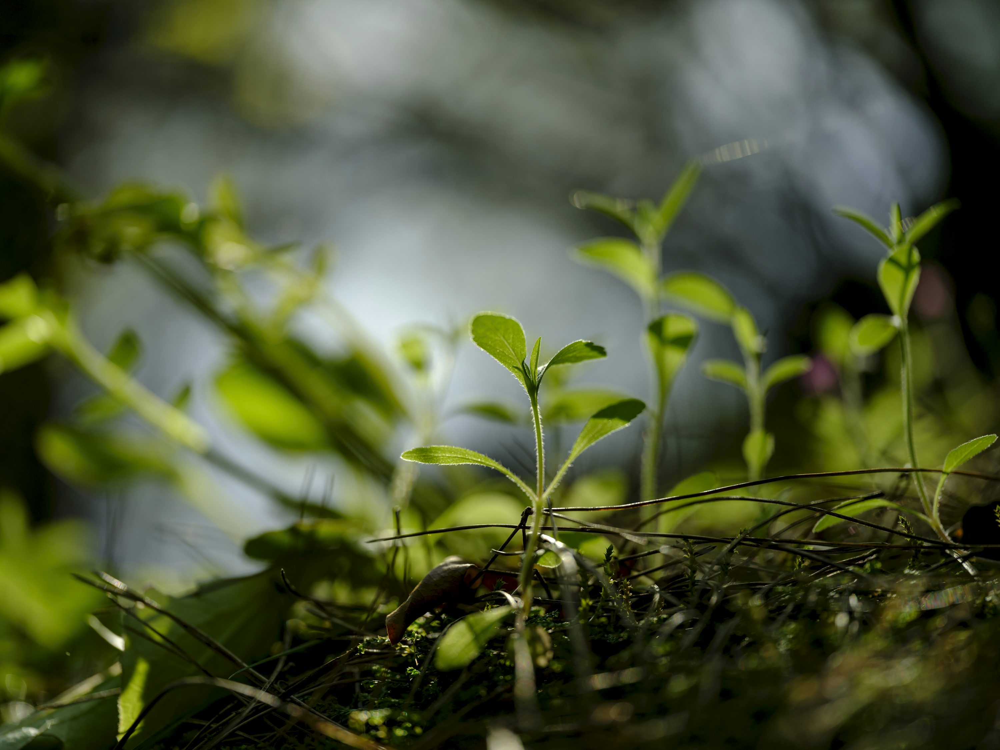

Turn your daily transactions into valuable insights. Make smarter decisions, reduce waste, and grow your profits with data you can actually use.
 Get Started TodayGreenSense is a smart platform designed to help small greenhouse farmers turn everyday transactions into valuable insights. Every time a farmer buys seeds, fertilizers, or soil, or sells crops to a local market, restaurant, or subscription box, GreenSense collects and analyzes the information.
But it's not just about recording sales and expenses. GreenSense uses intelligent analysis to answer questions like:
GreenSense acts like a personal assistant for your farm—one that is awake 24/7, watching over your crops, your expenses, and your sales, and giving you easy-to-understand advice.
Log every purchase and sale easily through your phone or computer. Keep all your farm data in one place.
Get automatic analysis of your expenses, sales, and crop performance without lifting a finger.
Receive notifications when crops underperform, costs spike, or profitable opportunities arise.
View clear charts and summaries that show how your farm is performing at a glance.
Small greenhouse farmers face common problems that GreenSense helps solve:
It gives farmers the tools they need to make smart decisions, reduce waste, and grow more profitably.
Create your account on our mobile app or website in just a few minutes.
Record your purchases and sales as they happen. Quick and simple.
Our AI analyzes your data and identifies trends, costs, and opportunities.
Use clear recommendations to optimize your crops and increase profits.
Know exactly where your money goes and which crops give the best returns.
Stop overplanting and making unnecessary purchases based on guesswork.
Make smart decisions about what to grow and where to sell.
Use past data to predict demand and plan your planting schedule.
Focus on farming while we handle the data analysis for you.
Access tools that help small farms compete with larger operations.
Join small greenhouse farmers who are making better decisions with GreenSense. Start seeing results in weeks, not months.
Start Free Trial Request Demo